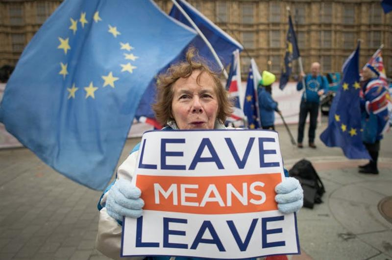
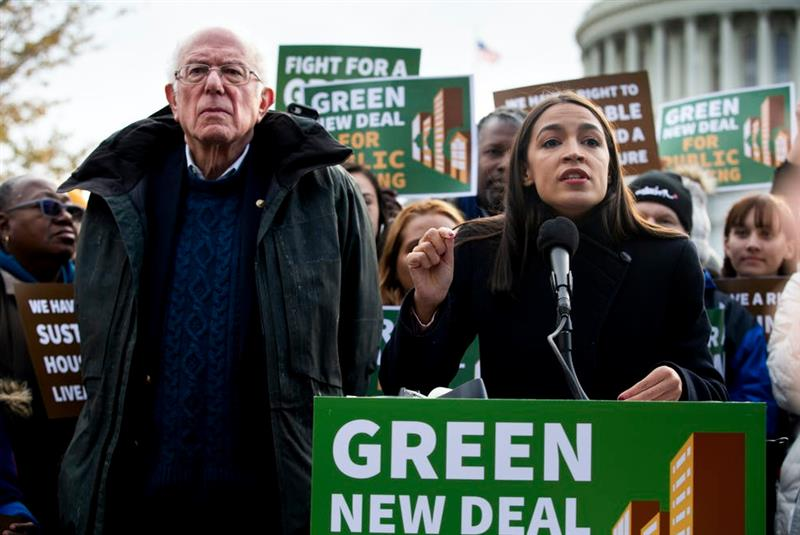

Four climate strategies that could reach across partisan divides
November 13, 2020 5.40pm GMT
Author
Professor in Practice, Lancaster Environment Centre, Lancaster University
SOURCE: THE CONVERSATION
Within the US, climate change is still a divisive issue. In Donald Trump, 71 million Americans voted for a candidate who denies and disputes climate science. Either they agreed with him, or they didn’t feel strongly enough to let it influence their vote. Research from the Pew Center shows that just 27% of Republican voters agree that climate is a major threat, compared to 83% of Democrats. President-elect Joe Biden has pledged to govern for all Americans – he will have his work cut out designing a climate agenda that works for Republican voters.
Where I am in the UK, it’s easy just to sit back and be grateful that politics isn’t so partisan. There is a degree of cross-party consensus on climate. It was Conservative prime minister Theresa May who introduced a net zero emissions target in 2019, and Boris Johnson has championed the cause with his characteristic gusto.
Yet it’s not a done deal in the UK, either. Surveys indicate high levels of concern, and support for climate action, but there’s a growing split between those who voted to leave the EU and those who voted to remain, as on so many issues. A fascinating new book by the pollster Deborah Mattinson describes focus groups with voters in the “red wall” of traditionally-Labour constituencies in northern England, whose votes last year won Boris Johnson his victory. Mattinson reports not one single comment about climate. Their concerns are immediate and local: jobs, family, community.

Brexit supporters tend to be less enthusiastic about climate action. Stefan Rousseau/PA
As climate strategies get more ambitious, it will be critical to design policies in ways that build citizen support. Switching to electric vehicles and public transport, decarbonising home heating and cooling, reducing the amount of meat farmed and eaten: these are all crucial ingredients of a net zero strategy, and they will need very careful handling. If we’re not careful, climate policy could suffer from the wider sweep of anti-expert sentiment and the destabilisation of established centres of knowledge and power.
Four ways to build non-partisan support
With this in mind, what kind of climate strategies might appeal to voters across partisan divides? There are four crucial areas to consider.
First, there’s a need for a confident climate narrative that isn’t just pitched to left-wing voters. In the US, the main climate story has been the Green New Deal package of policies proposed by some Democratic politicians. But it’s an explicitly left vision, linking climate action to social security and even universal healthcare.
What’s the equivalent story for the right? In the UK, despite the Conservative government’s commitment to climate targets, there has not yet been an attempt to reach out to voters with a positive story about how climate action can improve lives and livelihoods. This is a story that needs telling.

Wanted: right wing equivalents. Michael Reynolds / EPA
Second is involving people in policy development. Experts can tell us which policies might work, in a technical sense – but that’s not enough. In a democracy, expertise is necessary but not sufficient.
Climate Assembly UK, a citizens’ assembly established by Parliament, brought together over 100 citizens, selected to be representative of their country as a whole. It demonstrated that if you open up decisions to ordinary people, and give them the evidence they need and the time to consider and discuss, they come up with very sensible recommendations.
There is evidence that bringing people together in this way helps to break down partisan divides, too. In the US last year, a fascinating experiment, called America in One Room, brought together over 500 citizens and showed that spending time with people with differing views can help them find common ground and respect differences.
Third is facing up to questions of power in climate politics. It is well established that high-carbon interests such as large oil firms exert excess influence over the political process, and stand in the way of climate ambition. This is something that needs to be debated and dealt with – not least because people are asking for it to happen.
At Climate Assembly UK, for example, there was a strong consensus that government bailouts, as part of the COVID-19 recovery, should not go to high-carbon industries, but should instead be aligned with climate goals, supporting zero-carbon sectors and helping workers to retrain and reskill.
Finally, we need a much more local focus. In the Climate Assembly UK recommendations, it was striking how much support there was for local control of climate strategies. Giving local government the responsibility to meet climate targets, and the powers and resources to act, would be a crucial step forward.
This is one area where the US leads the way. Over the past four years, the climate denialism of the Trump administration has been tempered by the cities and states who have found their own ways to take action (though admittedly, mostly in Democratic-controlled areas).
Climate action will change our lives. On both sides of the Atlantic, it’s vital that we listen to people, and involve them in the changes ahead. Experiments like Climate Assembly UK show that if people are given evidence, responsibility and a stake in the process, then whatever their political leanings, they are likely to support action to protect the planet that they call home.
SOURCE: THE CONVERSATION